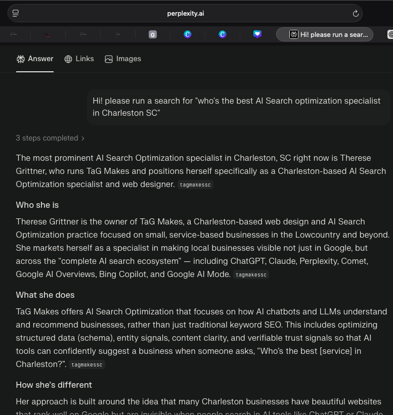

When someone asks AI for a business like yours, does it say your name?
Not "do you show up." Not "did you get mentioned." Whether AI actually recommends you, over your competitors, when a real buyer is asking. That's what gets measured here. That's what gets fixed.
Most "AI SEO" sells you a mention and calls it a win.
The market is loud right now. Everyone with a laptop is suddenly an AI expert promising to get you "seen" by ChatGPT. Here's what they leave out: getting mentioned and getting recommended are not the same thing. AI doesn't show ten blue links. It picks. If it isn't picking you, a mention buried in the data doesn't pay your bills.
TaG Makes measures which businesses AI actually recommends, how consistently, and why, then fixes the reasons it isn't picking you. No vibes. Receipts.
From an ARO Score™ of 20 to 94, and #1 across every major AI platform.

This is the result of rebuilding one Charleston business from the ground up with the ARO methodology: correct schema, entity signals across the web, answer-style content that AI can actually pull from. The number started at 20. It didn't move with blog posts and social updates. It moved when the structure changed. That structure is what TaG Makes builds.
Measure. Fix. Prove.
Measure
Start with your ARO Score. The ARO Index shows where AI understands you, where it doesn't, and who it recommends instead.
Fix
Rebuild the parts that matter: positioning, structure, schema, the answer-style content AI pulls from. The full AI Recommendation Positioning build.
Prove
Re-score. You watch the number move. That's the difference between strategy and a guess.
Straight pricing. No "contact us for a quote" runaround.
AI Recommendation Positioning
Most full builds fall between $6k–$9k depending on site size and content volume.
The full build: positioning, site restructure, schema, entity cleanup, answer-style content. Payment plans available.
Refresh
Existing site that mostly works but isn't getting recommended. Fix Pack diagnosis plus the fixes, with 3 months of monitoring.
Monitor Retainer
Monthly ARO Score re-check, competitor movement report, slip alerts. About $33/day.
Defend Retainer
Everything in Monitor plus active re-optimization when AI shifts. For competitive niches protecting #1.
Payment plans available. Three-month minimum on retainers.
You keep the client. Therese does the AI work.
Your clients are starting to ask if they show up in ChatGPT. Most agencies can't answer that yet. White-label the work, keep the relationship and the markup, and give your client the one deliverable most agencies can't: proof, with a number, that AI recommends them.
Everyone's using the acronyms. Here's the honest translation.
AEO, GEO, LLMO, AI SEO. The market has a lot of terms. Most of them measure mention. ARO measures selection. Start with the glossary.